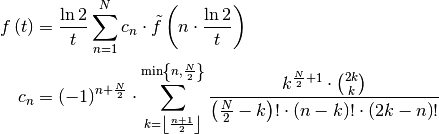
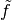
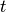

Laplace Transformation¶
Anaflow subpackage providing functions concerning the laplace transformation.
Functions¶
The following functions are provided
stehfest(func, time[, bound, arg_dict]) |
The stehfest-algorithm for numerical laplace inversion. |
-
anaflow.laplace.stehfest(func, time, bound=12, arg_dict=None, **kwargs)[source]¶ The stehfest-algorithm for numerical laplace inversion.
The Inversion was derivide in ‘’Stehfest 1970’‘[R1] and is given by the formula

In the algorithm
 corresponds to
corresponds to bound,  tofuncand  totime.Parameters: - func (
callable) –function in laplace-space that shall be inverted. The first argument needs to be the laplace-variable:
func(s, **kwargs)func should be capable of taking numpy arrays as input for s and the first shape component of the output of func should match the shape of s.
- time (
floatornumpy.ndarray) – time-points to evaluate the function at - bound (
int, optional) – Here you can specify the number of interations within this algorithm. Default:12 - arg_dict (
dictorNone, optional) – Keyword-arguments given as a dictionary that are forwarded to the function given infunc. Will be merged with**kwargsThis is designed for overlapping keywords instehfestandfunc.Default:None - **kwargs – Keyword-arguments that are forwarded to the function given in
func. Will be merged witharg_dict
Returns: Array with all evaluations in Time-space.
Return type: Raises: ValueError– If func is not callable.ValueError– If time is not positive.ValueError– If bound is not positive.ValueError– If bound is not even.
References
[R1] Stehfest, H., ‘’Algorithm 368: Numerical inversion of laplace transforms [d5].’’ Communications of the ACM, 13(1):47–49, 1970 Notes
The parameter
timeneeds to be strictly positiv.The algorithm gets unstable for
boundvalues above 20.Example
>>> f = lambda x: x**-1 >>> stehfest(f, [1,10,100]) array([ 1., 1., 1.])
- func (